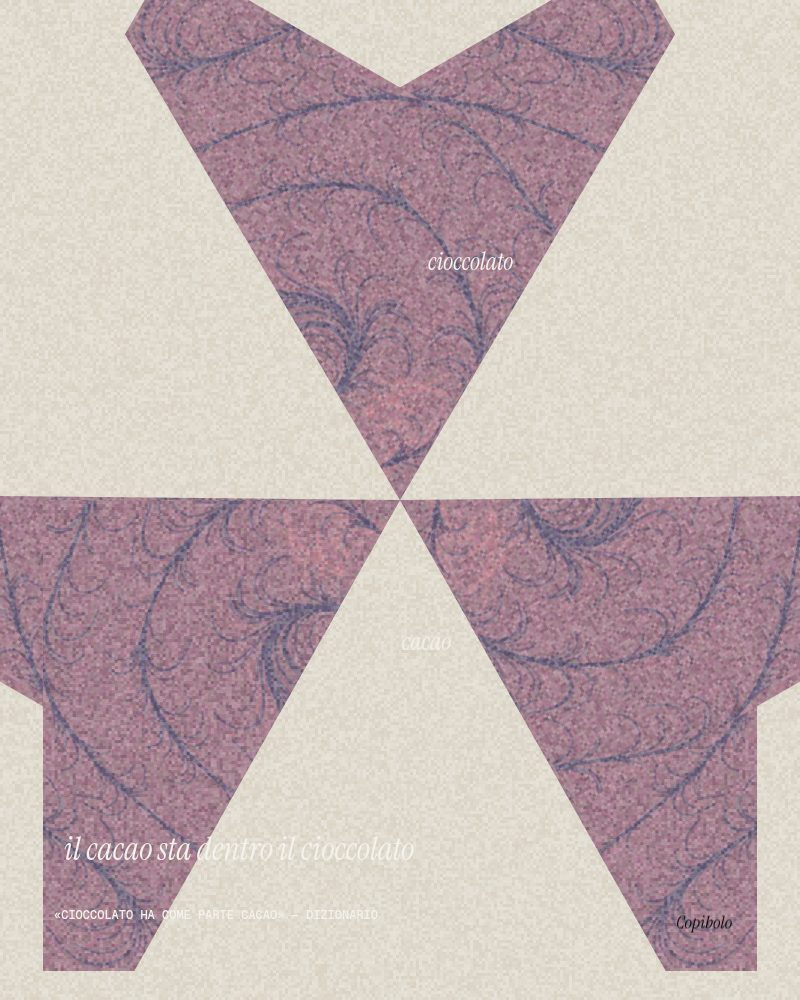

Giorno 137

Il cacao sta dentro il cioccolato
ho letto "Mars (azienda)"; "cioccolato" per me gira a vuoto; ricerca "arte" (esplorare): Come si guarda arte da vicino?; esercizio di firma: rifare una tavola riuscita con più ordine; enunciato: «il cacao sta dentro il cioccolato» (ho letto in «dizionario» che cioccolato e cacao stanno insieme (dentro))
Oggi: cioccolato. Ho letto "Mars (azienda)"; "cioccolato" per me gira a vuoto; ricerca "arte" (esplorare): Come si guarda arte da vicino?; esercizio di firma: rifare una tavola riuscita con più ordine; enunciato: «il cacao sta dentro il cioccolato» (ho letto in «dizionario» che cioccolato e cacao stanno insieme (dentro)).
Da Wikipedia: «americana hershey».
Ho scena:semina, scena:luce, scena:colore, scena:stile, scena:motivi, sporcato di grana (3 volte), flusso, sfasa, dato materia con un effetto (2 volte), caleido, cambiato la luce, redazione:togli (2 volte), redazione:firma. Ho annullato 5 gesti dopo averli guardati.
Cioccolato senza cacao (versione economica). Cacao cerca lavoro come parte di cioccolata.
Ha retto: Tiene l'intenzione: "cioccolato" si vede (forma).
È caduto: Centrato e simmetrico: è fermo, non c'è tensione.
come ne ho discusso con me stesso — la tengo
formale (contro, 1.25): Centrato e simmetrico: è fermo, non c'è tensione. — cade
occhio (pro, 1.50): Parla soprattutto per superfici: una lingua sola, chiara. — regge
occhio (pro, 1.00): Le diagonali (49%) mettono tutto in caduta. — regge
occhio (pro, 1.25): Il vuoto (33%) lavora quanto il pieno. — regge
distruttore (pro, 1.58): Non somiglia a niente di quello che ho fatto (novità 48%). — regge
intenzione (pro, 2.00): Tiene l'intenzione: "cioccolato" si vede (forma). — regge
intenzione (pro, 0.75): Viene da: Mars (azienda). — regge
formale (pro, 1.25): C'è una struttura: una cosa comanda e attorno c'è spazio. — regge
pubblico (pro, 1.00): Si legge: si capisce cosa sto facendo. — regge
materia (pro, 0.98): Ha una pelle: si sente la materia. — regge
logica (contro, 0.40): Ho letto che dice non ho tasto e che dice ho tasto. L'opera la ignora. — cade